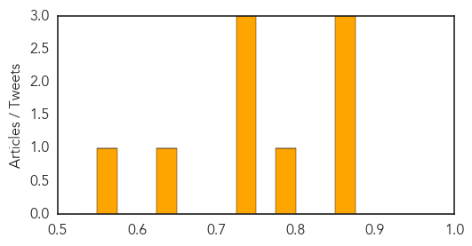
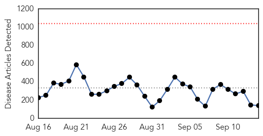

Measles
30-Day Web Trend
1 alerts, 0 warnings

30-Day Twitter Trend
0 alerts, 0 warnings

Article Locations

Article Confidences
Top Articles:
- 0.872
- Impact of measles infections in England revealed
- 0.860
- Harsh Vardhan assures J&K of help to prevent epidemics
- 0.859
- Harsh Vardhan assures Jamp;K of help to prevent epidemics
- 0.779
- Possible measles exposure at Seattle airport, health officials warn
- 0.749
- Harsh Vardhan's assurance to prevent epidemic in Kashmir
- 0.730
- Harsh Vardhan's assurance to prevent epidemic in Kashmir
- 0.727
- Harsh Vardhan's assurance to prevent epidemic in Kashmir
- 0.640
- Health officials warn of Sea-Tac measles exposure
- 0.573
- Health officials warn of Sea-Tac measles exposure
Top Tweets:
-
No tweets found for Sep 14, 2014
Ebola
30-Day Web Trend
0 alerts, 0 warnings

30-Day Twitter Trend
1 alerts, 0 warnings
Article Locations
Article Confidences
Top Articles:
- 1.000
- A virus hunter faces the big one: Ebola
- 1.000
- Obama to discuss US response to Ebola next week
- 1.000
- American Ebola Patient Gets Appetite Back
- 1.000
- Liberia Fires Officials for Not Returning to Fight Ebola
- 1.000
- Fourth doctor dies of Ebola in Sierra Leone
- 1.000
- Ebola Virus Screening Follows WHO Roadmap
- 1.000
- MBITIRU : Ebola has killed 35 in the DR Congo as world’s focus is on - Opinion
- 1.000
- Liberia Fires Officials for Not Returning to Fight Ebola
- 1.000
- WHO Denies Evacuation of Ebola-Stricken Doctor from Sierra Leone
- 1.000
- WHO says it can't evacuate Sierra Leone doctor with Ebola virus
- 1.000
- Sierra Leone: 4th doctor dies from Ebola - Emirates 24
- 1.000
- Liberia Fires Officials for Not Returning to Fight Ebola
- 1.000
- Ebola epiodemic will rage for another 12 to 18 months, U.S. scientists say
- 1.000
- Medic becomes fourth doctor to die of Ebola in Sierra Leone after failed bid to move her to Germany for treatment
- 1.000
- Sierra Leone requests funds for Ebola evacuation
- 1.000
- Ebola outbreak: WHO denies request from Sierra Leone to fly out infected doctor
- 1.000
- Are officials keeping facts about Ebola from the easily frightened public?
- 1.000
- Fourth doctor dies of Ebola in Sierra Leone after failed bid to evacuate her abroad
- 1.000
- Liberia Fires Officials for Not Returning to Fight Ebola
- 1.000
- Liberia sacks officials over Ebola fight
- 1.000
- Sierra Leone requests funds for Ebola evacuation
- 1.000
- Health care officials worry about Ebola virus becoming airborne
- 0.999
- The Mathematics of Ebola Trigger Stark Warnings: Act Now or Regret It
- 0.999
- Ebola Deaths Jump by Almost 200 People in a Single Day as Pandemic Explodes
- 0.999
- Ebola kills fourth doctor in Sierra Leone
- 0.999
- Ebola fallout: Liberia president sacks 10 officials
- 0.999
- Funds needed for Ebola evacuation
- 0.999
- The Ebola Outbreak Sees Emergence Of Black Market Dealings Of ‘Blood Serum’ Even As
- 0.999
- 4th doctor dies of Ebola in Sierra Leone
- 0.999
- Fourth doctor dies of Ebola in Sierra Leone after failed bid to evacuate her abroad
- 0.999
- Fourth Sierra Leonean doctor dies from Ebola
- 0.999
- Sudan Vision Daily
- 0.999
- Dutch Ebola doctors 'to be evacuated on Sunday'
- 0.999
- UPDATE 1-Liberia president sacks 10 officials told to return to fight Ebola
- 0.999
- Celebration in Liberia slum as Ebola quarantine lifted
- 0.999
- Sierra Leone Seeks Funds For Ebola Evacuation
- 0.998
- Cuba to send doctors to fight Ebola outbreak as death toll rises
- 0.998
- SA, Mpuma, ready for Moz Ebola threat
- 0.998
- U.S. To Train Liberian Armed Forces To Help Tackle Ebola Crisis
- 0.998
- Fourth Doctor Dies in Sierra Leone, WHO Unable to Provide Funding
- 0.998
- Paul Allen Donates $9 Million To Ebola Fight, Liberia President Seeks Help From US To Combat Disease
- 0.998
- U.S. to train Liberian forces to tackle Ebola
- 0.998
- Ebola: Liberia’s absentee officials axed - Africa
- 0.998
- Ebola crisis: Life... and death in the 'high-risk' zone in Sierra Leone
- 0.998
- Ebola hasn’t scared doctors away – Achimota Hospital
- 0.998
- Ebola preparedness in Ashanti dogged by financial difficulties
- 0.998
- Liberia president sacks 10 officials told to return to fight
- 0.998
- Fourth Sierra Leonean doctor dies from Ebola
- 0.997
- Botswana defies AU call to lift travel ban on Ebola affected countries
- 0.997
- 10 officials sacked for staying overseas
Showing top 50 articles...
Top Tweets:
- 0.869
- Another health professional tragically lost to Ebola. May your soul rest in peace, Dr. Buck. endebolanow ebola http://t.co/XaNFT0KH5i
- 0.813
- RT: Ebola: the bravest of the brave: half the 301 health-care workers who developed the disease died. http://t.co/MjeGKKHFb6
- 0.638
- السعودية تقر برنامجا للكشف عن إيبولا لدى الحجاج. Ebola http://t.co/8MhWP3MrLC"